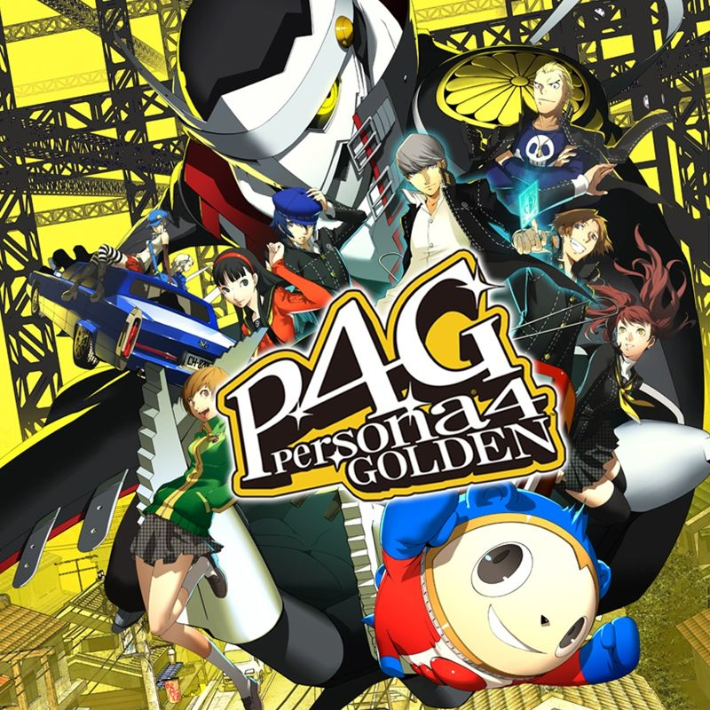
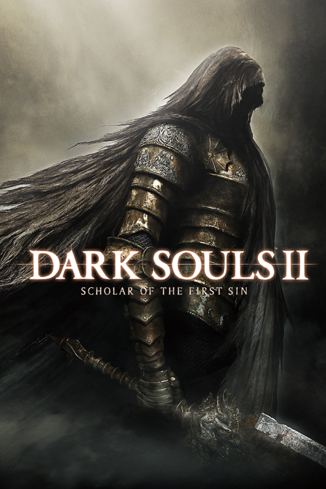
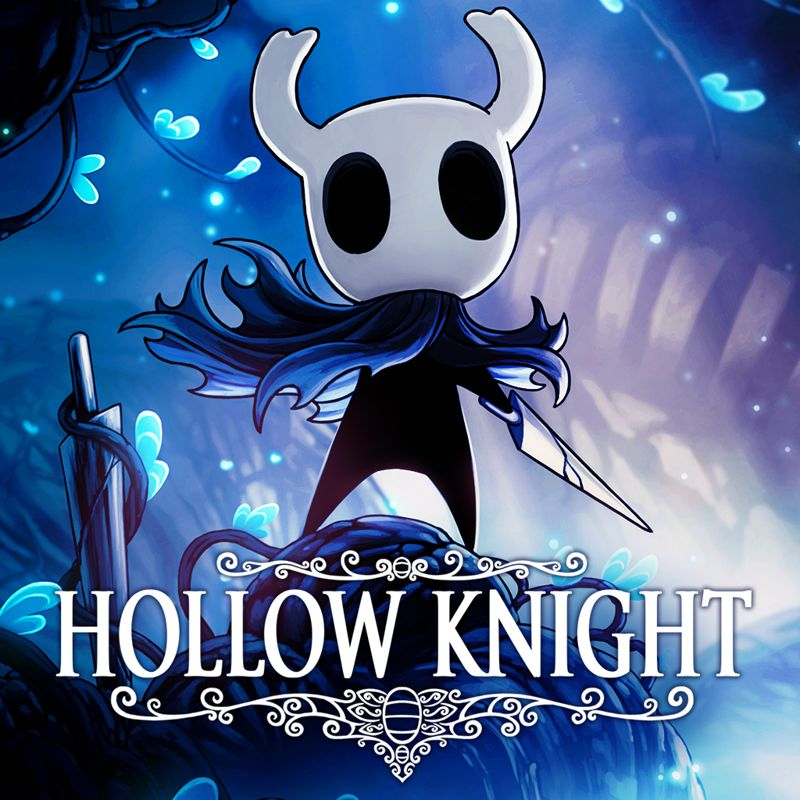

Persona 4 Golden
Persona 4 é um dos meus jogos favoritos da vida, sua história é muito marcante, com várias reviravoltas e um final que eu particularmente considero perfeito.
Este site foi feito, com o intuito de mostrar meus jogos favoritos, um site apenas pra aprendizado, e treinar minhas habilidades.

Persona 4 é um dos meus jogos favoritos da vida, sua história é muito marcante, com várias reviravoltas e um final que eu particularmente considero perfeito.

God Of War 4 é um dos melhores jogos que já joguei, tem momentos inesquecíveis, com uma gameplay incrível, e uma história que deixa você com um gostinho de quero mais.

Dark Souls 2 é um dos melhores Souls já lançados, mesmo que muitos vão discordar de mim, ele sempre terá um lugar especial pra mim, posso considerar esse meu jogo conforto.

Hollow Knight é sem dúvidas o melhor metroidvania que já joguei, finalizei esse jogo inúmeras vezes, conheço o mapa de olhos fechados, com sua exploração sendo um ponto muito forte, além do combate incrivelmente desafiador.